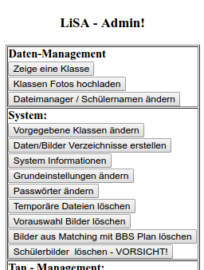

LiSA auf Server kopieren
mittels git:
1. git clone https://github.com/reimht/lisa.git
2. chown www-data:www-data -R lisa/
oder mittels wget:
1. wget https://github.com/reimht/lisa/archive/master.zip
2. chown www-data:www-data -R lisa-master/
Erster Start
1. Beim ersten Start werden einige Konfigurationsdateien erstellt.
2. Das Erstellen der Bilderverzeichnisse erfolgt nicht automatisch.
3. Für die weitere Ersteinrichtung in den Admin-Bereich wechseln. (Passwort: admin)
4. Im Admin-Bereich den Menüpunkt "Daten/Bilder Verzeichnisse erstellen" auswählen.

5. Ausgabe überprüfen ob alle Verzeichnisse korrekt erstellt wurden.
6. Im Admin-Bereich den Menüpunkt "Passwörter ändern" auswählen. Hier die Passwörter ändern und speichern.